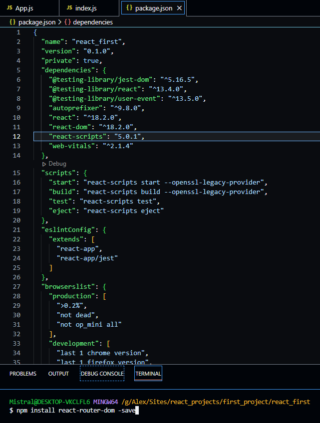
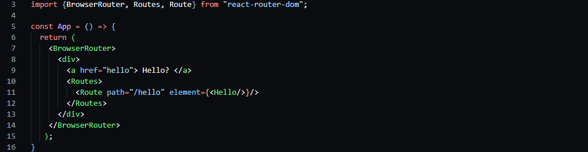

Простейшая маршрутизация, route
Раз вы здесь, наверняка у вас возник вопрос, как сделать, чтобы в зависимости от пути в странице менялся не только URL, но и содержимое странички.
Именно в таких случаях на помощь приходит роутинг. Так вышло, что в пакетах NodeJS нет роутинга, поэтомум нужно установить почти самостоятельно.
Для этого в терминале, если вы в Visual Studio Code, или в NodeJS консоли прописываем следующее: npm instal react-router-dom -save (-save нужен для отметки о скачивании
в package.json) и ждём.

После установки у нас появилась запись об этой установке и теперь можно пользоваться благами роутинга. В начале нужно указать, что мы используем роутинг, импортировать
его: import {BrowserRouter, Routes, Route} from "react-router-dom"; . После приступаем к использованию данных тэгов.
Для этого внутри return() пишем родительский элемент <BrowserRouter> </BrowserRouter> соответственно. Внутри него
используем тэги <Routes> и </Routes>, а уже внутри них, наконец, используем последний импортированный тэг <Route/> (конструкция похожа на матрёшку).
В него нужно уложить путь (path='путь'), а также компоненту (element={<Компонента/>}), которая будет отрисовываться по этому пути. Например, у нас есть
компонента Hello, которую нужно отобразить по пути /hello .

Таким образом, при нажатии на Hello? у нас изменится путь на /hello , а <Route> отобразит нужную нам компоненту.
- Нужно скачать react-router-dom в терминале или консоле NodeJS
- В основном используем BrowserRouter, Routes, Route